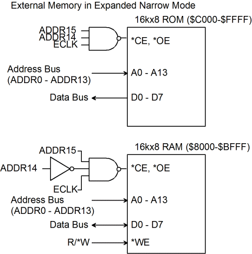

| Previous Section | Next Section | Index | Questions | Search the Text |
The 68HC12 and 68HCS12 have 8 operating modes, which are selected via the MODC (or BGND after power-up), MODA (PE6), and MODB (PE5) pins. These pins are sampled during reset to configure the mode. After reset MODA and MODB can be used for as general purpose I/O pins while MODC is used for the BDM. The mode can be checked by reading the mode register, MODE). Operating modes are explained in detail in section 4 of the Technical Summary. There are three modes which are "Normal" operating modes: Normal Expanded Wide, Normal Expanded Narrow, and Normal Single-Chip. In single-chip mode the external memory interface is not available, making the ports used for the memory interface available as general purpose I/O pins.
External memory and memory mapped peripherals can be connected in the Expanded modes. Address blocks used by internal components get precedence; if the address is not part of the internal register bank, RAM, or EEPROM then the external interface is used.
The reset of this section applies only to the 68HC12 component:
In Normal Expanded Narrow Mode, the address bus is brought out on ports A, B and G, for a total of 22 bits giving an address space of 4 megabytes using paging described in the section on Memory Expansion. If the paging mechanism is not used, then port G can be used as general purpose I/O pins, and a 16 bit address is presented on ports A and B for a 64 kilobyte address space. The data bus is 8 bits wide, and is presented on port C. Port D is available as general purpose I/O pins.
Because the data bus is 8 bits wide, only byte transfers are possible. Connection to 8 bit memory devices is simpler and less expensive than 16 bit devices, however there is a performance loss as the processor has internal 16 bit data paths and external memory reads and writes of 16 bit data words is accomplished by splitting the operation into two consecutive memory cycles, the lower address being sent first.
When calculating the timing of instructions, one memory cycle must be added for each external word memory reference. The time must be increased if clock stretch is used - a single cycle clock stretch means that three additional clock cycles must be added for an external word memory reference. While there is no penalty for 8 bit data references, all instruction fetches are words, meaning a performance penalty for each instruction executed.
The partial schematic below shows the connections to a memory subsystem consisting of 16k bytes of RAM starting at address $8000 and 16k bytes of ROM starting at address $C000. Address lines ADDR0 through ADDR13 connect to the address input pins of the memory devices. The ROM bank is addressed when ADDR14 and ADDR15 are both 1. In addition, ECLK is used to force reading only during the second half of the memory cycle (refer to the timing diagram here) when the address lines are valid and the memory is allowed to drive the data bus. The RAM is addressed similarly; however ADDR14 must be 0, so it gets inverted. The R/*W signal from the microcontroller connects directly to the *WE (write enable) input of the RAM to write to the RAM when it is selected. The *CE (chip enable) and *OE (output enable when reading) since we will always want to drive the data bus when we are reading from the memory device.

It needs to be emphasized that any design must take into account the timing characteristics of the microcontroller's interface busses, the memory devices, and any additional "glue" logic. Failure to perform a timing analysis could result in a system that does not work, or even worse, has occasional errors or is reliant on hand selected components.
Continue with Operation in Normal Expanded Wide Mode.
Return to the Index.
{kind=link}